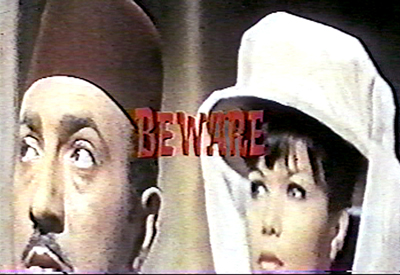

Orphans rushed into Cantor for the celebratory finale visibly altered from the scheduled dinner that was well-stocked with libations. The roaming caterers seemed eager to pour (and re-pour) into everyone’s glass.

The Spread

The food was to die for!

Richard Allen loses his virginity as Dan beams in the background

The happiest table in the room
The mood was indeed celebratory, if a bit raucous, and marked the successful end of a packed week of orphan films. Laura Rooney from AMIA took to the podium for opening remarks: “WOW!” she exclaimed in response to the symposium before she implored us to become members of AMIA. Dan Streible, commonly referred to by students and presenters as Coach Tubbs or Uncle Dan, had to shout into the microphone to be heard over the many rowdy orphans who were having trouble finding their seats. He went “off program” by inserting an Orphans favorite, Ro-Revus Talks about Worms (1971), which the audience devoured at Orphans 5.
The educational short, produced by the Office of Economic Opportunity, features a frog puppet that warns against the dangers of parasitic worms you can get when eating food dropped on the ground or if you go to the bathroom outdoors. The video has gained a significant cult following. Intended for children, the Orphans audience was well-matched as they howled at the narrating puppets that told horrific tales of invisible worms that migrate into your belly and multiply if you don’t maintain a good diet and appropriate hygiene level.
Unexpectedly, two color reels of outtake footage by Sam Fuller referenced earlier in the day were introduced by Mark Toscano who asked the audience if the location with French street names was recognizable. FRANCE! blurted one audience member, which was quickly refuted by BELGIUM! from another. Audience participation and spontaneous piano interludes were recurring themes for the evening.
Vince Collins’ short psychedelic masterpiece, 200 (1976), offered a nice counterpoint to the conventional political campaigning we have grown increasingly accustomed to seeing. Collins was commissioned by the U.S. Information Agency in 1976 to commemorate the bicentennial. Blinking stars and gyrating stripes reflect a State gone wild on hallucinogens. The national eagle rapidly interchanges with a peace sign, the white house and Mount Rushmore. At one point the Mayflower drifts across the screen followed by a cornucopia of American imagery—hamburgers, televisions, baseballs, and hot dogs.
Julie Hubbert presented excerpts from Music for the Silent Newsreels (1930, Fox Movietone News). She explained that newsreels received unusual treatment and were afforded room for improvisation at a time when popular music was taboo for features. She presented a “film-less film,” featuring pianist Harry Rosenthal at the piano narrating a hypothetical newsreel as he plays recognizable tunes such as Emile Waldteufel’s "The Skater's waltz". He would later go on to act in Preston Sturges screwball comedies, including The Palm Beach Story (1942) and The Lady Eve (1941).
Students from NYU’s MIAP program presented a compilation of three films uncovered from the garage of itinerant filmmakers, Dan Dorn and Dan Dorn Jr. The films promote the civic, industrial, and educational splendors of three New Jersey towns during the 1930s. The opening title of The Story of Hackettstown (1933) declared the film a “Civic and Educational Romance,” and was produced by the Hackettstown Kiwanis Club. The civic film does in fact weave in the love story of a young man visiting from out-of-town who unwittingly falls for a local girl. The love story unfolds in-between devotional footage of the town--the leather factory, a local parade, the Hackettstown Highball Team, a school fire drill--and culminates with the young man’s proposal, for we must assume he has fallen for both the girl and Hackettstown.
Particularly noteworthy was Joseph Clark’s presentation of sound from the March of Time’s Radio City Music Hall premiere of Peace, By Adolph Hitler (1941), a film concerning Hitler’s propaganda campaign and the history of Nazi aggression. Joseph explained that the sound of the audience during the premiere was the orphan, which he recently uncovered from the American Heritage Center at the University of Wyoming. The audience is well-behaved for the most part until Charles Lindbergh, who was heavily involved within the Non-interventionist movement, appeared on screen. Most of the audience reacted vituperatively with boos and jeers, but applause is also audible. The discovered sound is a significant addition to the often-ignored and nebulous history of film reception during World War II.
Martha Kelly presented Our Day (1938), a delightful film made by her father, Wallace Kelly, who was a photographer and writer and made many films for family viewing occasions. The film depicts an idealized and comic day-in-the-life of the Kelly household based in Lebanon, Kentucky. Martha added that it is an exceptional day when “everyone is happy, healthy, and well-dressed”. It is also a full day, complete with an energetic croquet battle, a game of hearts, and a glimpse into the photographic studio of Wallace Kelly that was based in their Kentucky home. The film ends bitter sweetly with a handwritten title that also signals the ensuing end to a fantastic symposium: “All good things must come to an end….And so must Our Day!”
Peggy Ahwesh presented a wildly frenetic film called Beirut Outtakes (2007), derived from material left in a projector in an abandoned theater in Beirut. The material, retrieved by her friend in 1988, consists of a variety of commercial fragments from 1961 to 1968 from Lebanon and overseas. Commercials for French cigarettes, carpet cleaners, United Airlines, underwear, and even the film Dead or Alive, flash on the screen at rapid speed. The decayed film and fragmentary nature of the material is unintentionally experimental, enacting the strange and hypnotic experience of watching commercials.

Beirut Outtakes, 2007
Dan appropriately brought the Symposium full-circle by concluding the night with Tunnel of Love (1996) by Helen Hill. This exceedingly charming film about accidental romance incorporates methods of stop-motion and hand-processed film. It includes delightful footage of toy animals, cotton candy, and swirling cocktail umbrellas. In fact, accidental romance and chance discovery seem to be a common trait uniting all orphan films and everyone involved in the Orphan Film Symposium for that matter. Just when Dan thought he could wipe the sweat off his brow, students declared they had an announcement for Coach Tubbs. As he leaned against the piano in the corner of the room, a student rushed toward him and dumped a water cooler filled with hundreds of film ends over his head, followed by two whipped cream pies that landed smack on his face. And with that, the Sixth Orphan Film Symposium concluded. Until next time!
- Gabriella Hiatt